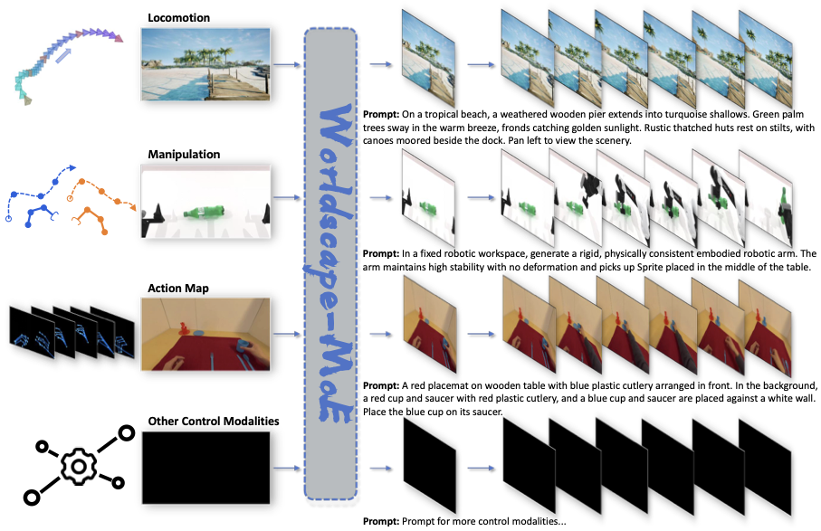
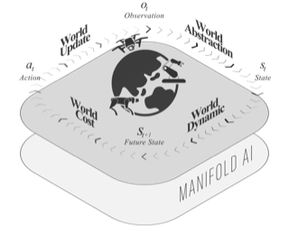
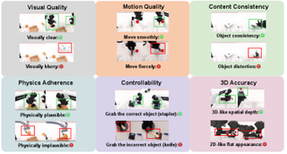
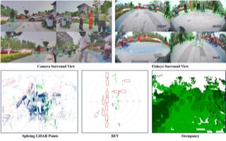
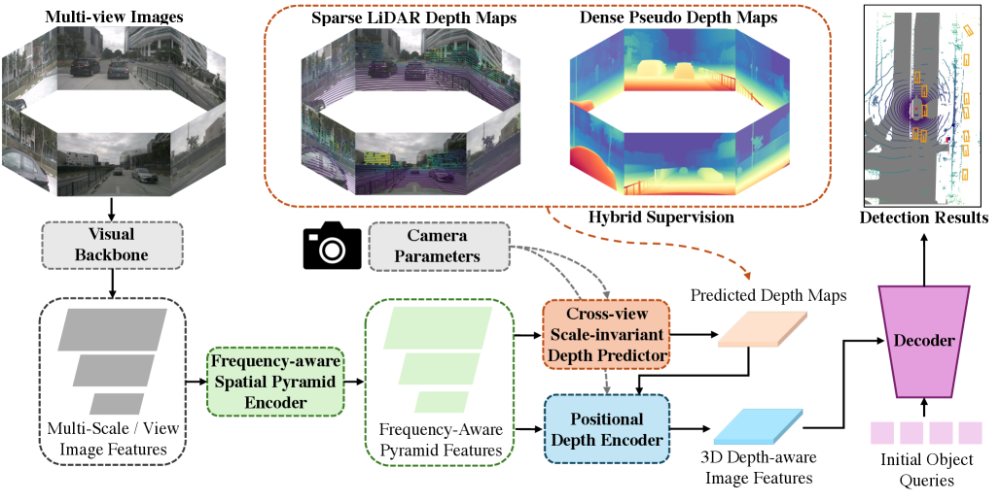
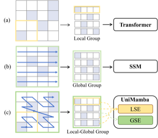
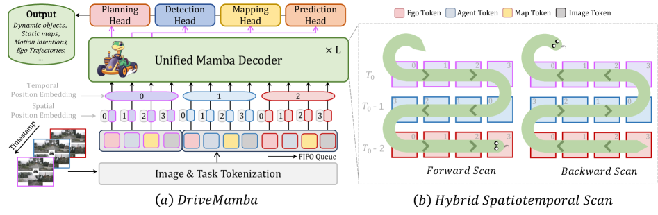
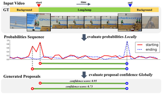

Haisheng Su (苏海昇)
Currently, I am Founding Partner of an AI startup focusing on interactive world models and embodied systems. My research trajectory has evolved from autonomous driving to embodied intelligence and foundation world models — building AI that perceives dynamic environments, predicts future states, and enables reliable action in the real world.
From 2020 to 2025, I served as Senior Research Scientist / Manager at SenseTime, including Intelligent Automotive Group (SenseAuto), leading R&D across intelligent connected L4 autonomy, V2X, cloud data closed-loop, end-to-end autonomous driving, and multimodal VLA and world model systems. I received my Ph.D. from Shanghai Jiao Tong University under Prof. Junchi Yan. At Manifold AI, I play a leading role in WorldArena, WorldScape Policy, and the World-Action Model line of research.
My work has resulted in 30+ publications, 2,400++ citations (h-index 16), and 20+ patents. Representative projects include:
- Behavior Understanding: BSN (ECCV 2018), BSN++ (AAAI 2021), TCANet (CVPR 2021), MGFNet (TMM 2020)
- Environmental Perception: FreqPDE (ICCV 2025), GeoFormer (ICCV 2025), UniMamba (CVPR 2025)
- End-to-End Decision Planning: EgoFSD (ICRA 2026), DriveMamba (ICLR 2026), DriveMoE (CVPR 2026)
- Embodied World Models: WorldScape, WorldScape Policy
- Embodied Benchmarks: RoboSense (CVPR 2025), WorldArena 1.0 & 2.0
Research Interests: Interactive World Models, Embodied AI, Autonomous Driving, Vision-Language-Action (VLA), 3D Perception, Video Understanding.
If interested in collaboration or discussion, please email me.
Recently, I am looking for post-doctoral research opportunities!
News
- Jul 2026 📢 We released the WorldArena 2.0 Challenge, expanding embodied world model evaluation with visuotactile modalities, interactive RL environments, and simulated-to-real robotic platforms across multiple embodiments. NEW
- Jul 2026 📢 We released WorldScape-MoE, which is a unified mixture-of-experts world model for scalable heterogeneous action control! NEW
- Jun 2026 🎉 Received Ph.D. from SJTU and was honored as Shanghai Outstanding Graduate.
- May 2026 📢 We released WorldArena 2.0 — an expanded benchmark that systematically broadens embodied world model evaluation across modality, functionality, and platform!
- Feb 2026 📢 We released WorldArena — the first international unified benchmark for embodied world models, designed to evaluate whether world models truly understand physical laws, predict action consequences, and support robot training, policy evaluation, and action planning.
- Feb 2026 📢 We released WorldScape Policy — a generalist robotic planner built on foundation world models, pioneering the World-Action Model paradigm.
- Feb 2026 🎉 Paper accepted to CVPR 2026: DriveMoE.
- Jan 2026 🎉 First-author papers accepted to ICLR 2026 (DriveMamba) and ICRA 2026 (EgoFSD).
- Jul 2025 🧑💻 Co-founded Manifold AI as Founding Partner; leading the development of foundation world models and embodied AI systems.
- Jul 2025 🧑💻 Completed tenure at SenseTime (2020–2025), after leading R&D across L4 autonomy, V2X, cloud data closed-loop, end-to-end driving, and multimodal VLA and world models.
- Jun 2025 🎉 Two first-author papers accepted to ICCV 2025: FreqPDE and GeoFormer.
- Feb 2025 🎉 Two first-author papers accepted to CVPR 2025: RoboSense and UniMamba.
- Apr 2020 🧑💻 Joined SenseTime as Research Scientist.
- Mar 2020 🎉 Graduated with M.S. from SJTU and was honored as Shanghai Outstanding Graduate.
Highlighted Projects




Multi-View 3D Perception
3D Perception · ICCV 2025FreqPDE — frequency-aware positional depth embedding for multi-view 3D object detection transformers.

LiDAR 3D Perception
3D Perception · CVPR & ICCV 2025UniMamba — unified spatial-channel representation learning with group-efficient Mamba for LiDAR-based 3D object detection; GeoFormer — geometry point encoder with graph-based Transformer for 3D object detection from point clouds.

End-to-End Autonomous Driving
Autonomous Driving · 2026Efficient end-to-end autonomous driving via scalable state-space models (DriveMamba), a fully sparse ego-centric paradigm with uncertainty denoising (EgoFSD), and mixture-of-experts vision-language-action planning (DriveMoE).

Publications
My publications span innovative methods for embodied world models, autonomous driving, 3D perception, and video understanding — including first-author works at CVPR, ICCV, ICLR, ICRA, AAAI, and TMM, as well as embodied benchmarks and technical reports. To date, my work comprises 30+ papers, 2,400++ citations, and an h-index of 16. Representative works are listed in Selected Publications.
Academic Service
Conference Reviewer
- The Conference on Computer Vision and Pattern Recognition (CVPR)
- International Conference on Computer Vision (ICCV)
- European Conference on Computer Vision (ECCV)
- Conference on Neural Information Processing Systems (NeurIPS)
- International Conference on Machine Learning (ICML)
- The AAAI Conference on Artificial Intelligence (AAAI)
Journal Reviewer
- IEEE Transactions on Pattern Analysis and Machine Intelligence (TPAMI)
- International Journal of Computer Vision (IJCV)
- IEEE Transactions on Neural Networks and Learning Systems (TNNLS)
- IEEE Transactions on Image Processing (TIP)
- IEEE Transactions on Circuits and Systems for Video Technology (TCSVT)
- IEEE Transactions on Multimedia (TMM)
- IEEE Transactions on Artificial Intelligence (TAI)
Mentoring & Team Leadership
- 2020 – 2025 Led 20+ person R&D team on autonomous driving and mentored 20+ interns at SenseTime; co-authored 10+ papers at CVPR, ICCV, ICLR, and ICRA; 20+ granted Chinese national invention patents
- 2025 – Present Building research team at Manifold AI as Founding Partner on embodied foundation models
Contests
-
2022
Runner-up 🥈, UG2+ Challenge: Semi-supervised Action Recognition in the Dark Track
IEEE CVPR UG2+ Challenge · Leaderboard
-
2021
Winner 🏆, HACS Challenge Weakly Supervised Temporal Action Localization
IEEE CVPR HACS Challenge - Weakly Supervised Learning Track · Leaderboard
-
2021
Runner-up 🥈, HACS Challenge Temporal Action Localization
IEEE CVPR HACS Challenge — Supervised Learning Track · Leaderboard
-
2020
Second Prize 🥈, National Post-Graduate Mathematical Contest in Modeling (NPMCM)
Huawei Cup NPMCM
-
2018
Winner 🏆, ActivityNet Challenge Temporal Action Localization Track
IEEE CVPR ActivityNet Challenge · Leaderboard
-
2018
Runner-up 🥈, ActivityNet Challenge Temporal Action Proposal Track
IEEE CVPR ActivityNet Challenge · Leaderboard
-
2018
Third Prize 🥉, Baidu Star Developer Competition
Rank 5/1371
-
2016
Third Prize 🥉, RoboMaster Competition
National College Student Robot Competition
-
2014
Third Prize 🥉, National English Competition for College Students (NECCS)
Organizing Committee of National English Competitions for College Students
Awards & Honors
-
2026
Outstanding Graduate of Shanghai (Ph.D.)
Highest honor for graduates in Shanghai, Ministry of Education
-
2020
Outstanding Graduate of Shanghai (M.S.)
Highest honor for graduates in Shanghai, Ministry of Education
-
2018
National Scholarship for Postgraduate
Highest honor for undergraduates in China - Top 1% nationwide
-
2018
Excellent Graduate Student Scholarship
Shanghai Jiao Tong University — Top 10% in Automation Department
-
2015
National Scholarship
Highest honor for undergraduates in China - Top 1% nationwide
Experience
-
Founding Partner · Manifold AI
Leading embodied foundation model research, including embodied world model benchmark and world-action model for generalizable robotic policy learning.
-
Research Scientist · SenseTime
Smart City Group (SCG). Developed key video understanding algorithms for anomaly action detection in security & surveillance scenarios.
-
Research Intern · SenseTime
SenseTime Research, Shanghai. Worked on temporal action localization and video analysis during M.S. studies at SJTU.
Education
-
Ph.D. in Computer Science · Shanghai Jiao Tong University
Advisor: Prof. Junchi Yan · Shanghai Outstanding Graduate · Research Interest: Autonomous Driving, Embodied AI, World Models.
-
M.S. in Control Science and Engineering · Shanghai Jiao Tong University
National Scholarship (Top 1%) · GPA: 3.72/4.0 · Shanghai Outstanding Graduate · Research Interest: Deep Learning and Video Analysis.
-
B.S. in Automation · Central South University
National Scholarship (Top 1%) · First-class Scholarship (Top 5%) · GPA: 91/100 (Rank: 2/170).